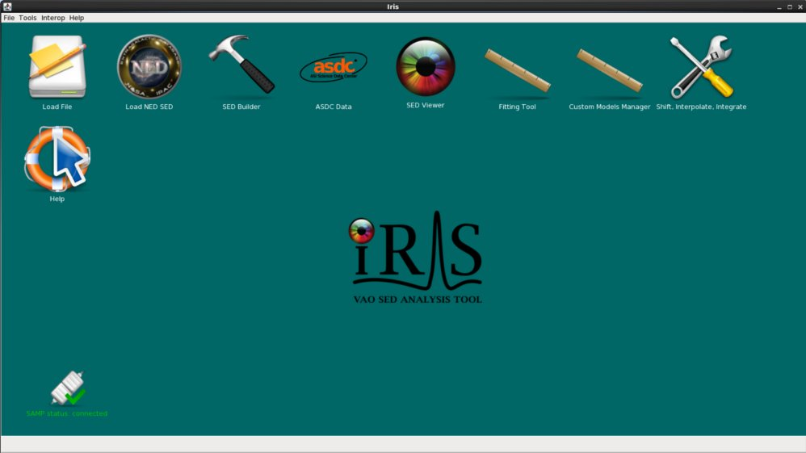

In this thread we step through an example Iris session in which the Spectral Energy Distribution (SED) of the FSRQ (flat-spectrum radio quasar) blazar BZQ J2129-1538 is analyzed, to represent the typical path one would take through the tool in order to build, analyze, and save a SED to file. We string together the components of the [Iris How-to Guide][guide] in order to integrate the individual features and capabilities of Iris into one, big picture.
Last Update: 07 May 2015 - Updated for Iris 2.1 beta.
In order to visualize an SED of an astronomical object across a wide range of wavelengths, multiple SED segments from various locations must be gathered and co-plotted; Iris features multiple entry points for SED data to facilitate this process. You can load data files from your local disk into Iris, or import SED data directly from the photometry archives of the NASA Extragalactic Database (NED). Independent of how each data set is loaded and from where, Iris can simultaneously plot multiple SED segments together in the main display.
In this thread, we will import two SED segments of BZQJ2129-1538 for analysis in Iris: one from the NED SED archives, and the other from file on disk.
Let us start by launching Iris from the command line:
% /bin/bash # do this for C-shell users ONLY $ source activate iris $ iris

We can choose to import SED data directly from NED via either the Get an SED from the NED Service option in the Iris Load File or Load NED SED icon on the Iris desktop. This feature allows you to search the NED photometry database by object name to return the available SED data for that object.
So let’s go ahead and import the BZQJ2129-1538 SED directly from NED. We enter the identifier “bzqj2129-1538” in the Target Name field, and then click Import NED SED to automatically display the SED available for this object in the Iris Visualizer.
| [Back to top] |
An SED data file for an object of interest can be loaded into Iris simply by starting the application and selecting the Load File icon on the Iris dekstop. If the file comes in a format which is not natively supported by Iris - i.e. a file that is not IVOA-compliant FITS or VOTable - then it must first be converted to a supported format in the SED Builder interface before it can be displayed in the Iris Visualizer. You can learn more about the file formats recognized by the SED Builder on the Iris [Supported File Formats][importer_files] page, and refer to the Building and Managing SEDs section of the Iris How-to Guide to learn how to use the SED Builder to convert data for display in Iris.
Looking at the NED SED of BZQ J2129-1538, we notice a large gap of data points in the infrared regime (from around 10^11^ to 10^14^ Hz). We will fill in a part of this gap using WISE data of this object in ASCII format on file. Download WISE.bzqj2129-1538.dat to get the photometric data. The first column of the file contains the wavelength in Angstroms, and the second and third contain the flux density and corresponding error values, respectively, in ergs/s/cm2/Angstrom.
Let’s add the WISE data onto our NED SED of BZQ J2129-1538. Under the “Segments” section in the SED Builder window, click the green plus-sign that says “Load File”. At the top of the “Load an input File” window, we click “Location on Disk”, browse for WISE.bzqj2129-1538.dat, select “ASCII Table” from the menu of file format options, and then click “Load Spectrum/SED”.
| [Back to top] |
Since we would like to analyze a photometric data segment which we have stored in a format not natively supported by Iris, we must configure the file in the Iris SED Builder interface before it may be displayed in the Iris Visualizer for analysis. This involves starting Iris and loading the data file into the tool; entering various pieces of information about the file format so that the tool can convert from the unsupported to a supported format; and then saving the converted data as a new SED segment in the SED Builder, where it may also be saved to file. The converted segment may be saved to a separate file, or may be added to other SED segments to form an aggregate SED. This is what we will do for the BZQ J2129-1538 SED: form an aggregate SED with the WISE and NED SED data in the SED Builder to analyze.
WISE.bzqj2129-1538.dat is in a non-standard format, so we are brought to the Import Setup Frame window of the SED Builder in order to specify which columns in the input ASCII table correspond to the X axis, Y axis, and Y axis error arrays. (The other, optional fields may also be filled in; refer to the “Building and Managing SEDs” section of the [Iris How-to Guide][guide] for details and instruction.)

Here, we have ‘told’ Iris that the first column in our input data file corresponds to the spectral coordinate axis and contains wavelength values in Angstrom units; and likewise, that the second column contains flux density values in ergs/s/cm2/Angstrom units. Finally, we specify that the errors on the flux density values are contained in the third column of our input file (as opposed to being unknown, or of a constant value).
If we had more ASCII files to convert and add to our SED, we would save this conversion configuration to a so-called “setup” file by selecting the “Save Setup” option. This setup file would allow us to convert many data files in the same unsupported format from the command line, non-interactively; i.e., so that you do not have to re-create the same conversion setup within the GUI for each file (see Creating a Setup File for more information about configuring setup files).
Now, we click “Add Segment to SED”, and see that the WISE data is automatically co-plotted with the NED SED, and that the WISE segment (segment with 4 data points) has been added to the “Segments” list in the SED Builder window. The two segments are plotted in different colors (WISE is black, NED is red) to help us visualize the separate segments.
We can also save the WISE data segment in VOTable or FITS format by highlighting the segment in the SED Builder window, and clicking the “Save” button in the Segements section. We could also save the aggregate SED by highlighting the SED name in the left-column, and clicking “Save” from the top bar of the SED Builder window. You can choose to save the SED as-is or as a Single Table. The Single Table option removes all metadata, saving only the spectral coordinates, fluxes, and flux errors (a low-maintenance format for external use in other programs, but this means that the next time you load the Single Table in Iris, Iris will not be able to distinguish the two SED segments). If you wish to maintain the individual SED segments for a later session in Iris, do not check “Single Table”.
| [Back to top] |
The Iris Visualizer is an adaptation of the [Specview][specview]) spectral visualization and analysis GUI, and as a result offers several of the data display preferences of Specview. Multiple SED data segments or photometric points may be plotted simultaneously in the Iris main display, tables of metadata and data arrays may be accessed and filtered, and the attributes of several components of the display may be customized to suit your preferences.
In order to view both of the SED data segments of BZQ J2129-1538 simultaneously in the Iris display, we simply load and configure both segments in the SED Builder, as outlined above; multiple segments of an aggregate SED (those listed in the “Segments” field of the SED Builder) always display together.
Separate SEDs may also be maintained in a given Iris session, where only one is displayed at a time, by loading each new SED via the the “New” button at the top of the SED Builder window, as opposed to adding new segments in the “Segments” area (see the “Building and Managing SEDs” section of the Iris How-to Guide for details). If you wish to view two separate SEDs at the same time, you can use the “Co-plot” function under Display in the Iris visualizer tool bar.
For display purposes, let’s change the name of the SED from “Sed”, the default name, to “BZQ J2129-1538” by typing the new name into the “ID” field near the top of the SED Builder window. Renaming SEDs with meaningful titles can be helpful when analyzing numerous SEDs in an Iris session.
It is important to note that when multiple SED data segments are plotted together, the spectral data from each segment is not combined, coadded, or spliced in memory in any way. The raw data from the multiple input spectra is completely preserved in the resulting combination.
Finally, note that one of the loaded data segments displays in magenta-colored symbols; this indicates that the data have associated zero-value errors. Data points with zero-value errors are ignored in the model fitting in Iris (see the Iris FAQs for details).
| [Back to top] |
Clicking the “Metadata” button in the upper-right corner of the Iris display opens a window containing three separate tabs of information, the first displaying the metadata associated with each SED data point in the plot, the second showing data about each SED segment, and the third listing independent and dependent data arrays defining the plot.
When available, the Metadata tab includes many useful pieces of information about the data points currently displayed. When a SED is imported from NED, for example, the metadata includes such things as the bibliographic reference code for each data point, the spectral range covered by instrument used to obtain data point, data point uncertainty and flux values as they are published, data point significance values, among others For the WISE data, only the data point ID and SED name is returned since our data files were loaded without associated metadata.
The Segment metadata tab displays metadata that is common to the whole SED segment. We find similar information that’s in the Metadata tab, amongst other reference information. We will not be using the segment metadata for this analysis.
The Data tab shows the X (Spectral Axis) and Y (Flux Axis)coordinate values of each SED data point in the Iris display, reflecting the values as they were imported into Iris from NED or uploaded from a file on your hard disk - not what is currently plotted in the Iris display (in the event that you changed the units of the data plot within the display). For example, if the data were uploaded in Jansky flux units versus frequency in Hertz, but then you change the display units to ergs/s/cm2/Angstrom versus Angstrom, the data point values returned will be in Jansky flux units and Hertz.
| [Back to top] |
The Metadata function in the Iris main display also allows us to filter the current SED so that selected (or unselected) points appear suppressed or ‘grayed out’. This can be done by selecting the rows corresponding to these points in the Metadata tab, and then clicking “View un-selected” at the bottom of that window. In the display, the points selected in the Metadata window will appear fainter than the unselected points.
Let’s remove all photometric points without uncertainties. Here, we have masked photometric points without any reported errors using the Boolean filter in the Data tab. We type “f: > 0” into the filter (if a cell should have a numeric value but is left empty, the cell will be selected in this way). In the resulting figure below, the diamonds (representing the points with no errors) are lighter than the rest of the points.
Selected data points may even be extracted into a whole new SED by clicking “Extract” after making the desired row selections in the Metadata window. This will open a new SED in the SED Builder window named “FilterSED” - an ID which you can change - which will display in the Iris Visualizer. Let’s extract the filtered BZQ J2129-1538 SED from the Data tab, so that we only have the data with associated uncertainties. Note that the colors switched between the WISE and NED data: WISE data is now red, and the NED data is black (this is because the SED segments are arranged alphabetically after extracting a new SED, so the colors, which translate lexicographically, also change).
| [Back to top] |
We know that BZQ J2129-1538 is at redshift z=3.268 (2001A&A…375…739D). Before analyzing our data any further, let’s shift the SED to restframe. We can easily do this in Iris. Click on the Shift, Interpolate, Integrate icon on the desktop. In the “Redshift” section of the Redshift and Interpolate tab, we type “3.268” into the “Initial redshift” field and “0” into “Move to redshift”, and finally select “Create new SED”. The blueshifted SED will automatically display in the Iris Visualizer.
Note that the indivual SED segments are combined into one, aggregate SED, and that the NED metadata is not retained.
We have two very similar (and ambiguous) names for the filtered and filtered+shifted SEDs. We can change their names from the SED Builder window. Let’s rename them to something more meaningful: “BZQ J2129-1538 FilterSed” and “BZQ J2129-1538 FilterSed (z=0)”. Note that two SEDs loaded into the SED Builder cannot chare the same ID name.
Let’s observe the change in shape from the observed to the rest-frame BZQ J2129-1538 SED. We click Display –> Co-plot on the Iris Visualizer, select “BZQ J2129-1538” and “BZQ J2129-1538 FilterSed (z=0)”, and click “Co-plot”. We see that the object is brighter, and the whole spectrum shifted to higher frequencies, as expected.
| [Back to top] |
The axes units automatically displayed in the Iris Visualizer might not be the units of choice. We can change the units on the upper-right corner of the Iris visualizer. We can switch between “Flux” and “Flux density” using the drop-down menu next to the Metadata browser button, and then choose the desired X- and Y-axis units from the list that will pop-up in the top-left corner of your computer screen.
In our case, we want to plot Jy*Hz against Hz for reasons that will be clear when we start to fit the data (see the next section). Let’s change the Y-axis from “Flux density” to “Flux”, and choose Hz and Jy*Hz for our spectral axis and flux axis, respectively.
| [Back to top] |
Having loaded our desired BZQ J2129-1538 SED data and set our data display preferences, we are ready to define a model expression and fit the model to the data. The resulting best-fit values for the SED model parameters, and confidence limits on them, are physically meaningful quantities which we will use in our analysis of BZQ J2129-1538.
We initiate the fitting process by selecting the “Fitting Tool” icon on the Iris desktop.
The Iris Fitting Tool allows you to define a single or multi-component model expression, set starting model parameter values and ranges, and choose from among a list of robust fit statistics and methods. It also allows you to calculate the specified percent/sigma confidence intervals on best-fit model parameters, to assess the quality of the fit (e.g., entering “1.6” for 1.6-sigma, 90% confidence).
In the current release of Iris, it is not possible to edit SED data during the fitting process, e.g., to mask any data points which have been flagged as ‘bad’ and have them left out of the fit; or scale, trim, and join multiple data segments into a seamless, wide-band SED to be fit. This must all be done before the fitting session is initiated. However, Iris does support a simultaneous fit of multiple, separate SED segments.
*Note: Exiting the fitting window before clicking “Save” will erase all data - parameters, models, confidence limits - associated with that particular fitting session. Minimizing the fitting window and starting another fitting session with a separate SED will* not erase the previous fitting session; minimized fitting sessions may be restored simply by clicking on the desired SED name in the SED Builder.
New since Iris v1.1: the new Custom Model Manager* interface allows you to import into Iris your custom table, template, and Python user models, for use with the Iris Fitting Tool. Refer to the “Modeling and Fitting SED Data” section of the Iris How-to Guide to learn how to load your own models into Iris and use them to fit SED data in Iris.*
Before we start fitting the data, let’s talk about the physics of this SED, which will help us choose the right models. FSRQ blazar SEDs are dominated by two characteristic “bumps” in the infrared and gamma-ray regimes, as well as what’s called the “Big Blue Bump” at optical/UV wavelengths. These features are thought to be caused by synchrotron emission at low frequencies, inverse-Compton (IC) radiation at high energies, and black body radiation from the accretion disk in the center of the galaxy at optical/UV wavelengths (Dermer et al. 2009). It has been shown that the synchrotron and IC emission can be modeled by logarithmic parabolas. Therefore, we’ll need two log-parabolas and an accretion disk model for the X-ray regime to the “Components” list for fitting.
We can delete the [powerlaw][powerlaw] that is in the “Components” list since we will not be using it. We do this by highlighting the model and selecting “Delete” at the bottom of the fitting window (it is not required that we delete this component if we do not wish to fit with it; it may simply be ignored when defining the model expression)
We click “Add” and double-click “Preset Components” to browse the full list of optical and X-ray models available from Sherpa, to find the log-parabola and accretion disk models. From this list, we make three selections: “accretiondisk” once, and “logparabola” twice, in order to define these as the components with which to build our full model expression. The components will appear with identifiers “c1”, “c2”, and “c3” in the Fit window. Having selected our model components, we can combine them into the appropriate arithmetic expression in the “Model Expression” field. The SED spans more than 10 decades in frequency with large regions of sparse data. Therefore, we will add the components one-by-one, freezing the parameters of the previous model each time we add a new component. We will start by fitting the synchrotron emission peak, modeled by the log-parabola, “c2”.
| [Back to top] |
Next, we set some starting model parameter values for the fit by selecting the desired model component in the Fit window, and then “Edit”. Parameter values may be set in the fields of the editing window which opens, by entering the desired number and then either pressing “Return” on your computer keyboard or clicking “Apply” on the parameter window. The internal units for fitting in Iris are always in photons/s/cm^2^/Angstrom vs Angstroms, so all of the values entered into the parameter fields must be in or photons/cm^2^/Angstrom or Angstroms.
For our analysis, we choose to allow all model parameters to vary in the fit except the reference position of the log-parabolas and the accretion disk. If you wished to fix a parameter, you would uncheck the “Fit” box associated with that parameter. We make a guess at the peak positions of the log-parabolas and accretion disk emission (the parameter “refer”) by changing the spectral units to Angstroms, hovering the cursor over the points of interest in the Iris Visualizer and recording the X values (in Angstroms) in the parameter editing window. If the data points are off the sides of the plot area, click to re-center the plot.
For an initial guess, we use 1500, 500,000 and 1e-3 Angstroms for the accretion disk, the synchrotron region, and the IC component, respectively. To edit the parameter values, double-click “accretiondisk.c1”, “logparabola.c2” and “logparabola.c3”, and input the initial guesses into the respective refer box.
After recording the reference positions in the Edit Parameter windows, we switch back to Hz for the spectral axis. Note that we do not have to switch back to Hz for the fitting; this is just a matter of preference.
| [Back to top] |
Our final step in the preparation for fitting involves choosing a fit statistic and optimization method appropriate for our analysis. Selecting “Fit” in the Fit window launches a new window containing our statistic and method options.
We see that the fit can be done with a least-squares statistic, or chi-squared (with various methods for estimating the variances used by chi-squared), or with either of two maximum likelihood statistics that are useful when the data have low numbers of counts. We choose to fit with the chi-squared statistic (chi2datavar) and Monte Carlo (moncar) optimization.
| [Back to top] |
We are now ready to fit the data using our model expression, initial model parameters values, and chosen fit statistic and method. Selecting “Start” in the window displaying the fit statistics, initiates the fitting process. This may take a few seconds to compute since we’re using the Monte Carlo method.
When the fit completes, we see the fitted model overlaid on the SED data in the Iris main display; a data-to-model residuals plot ; and the following fit statistics returned: the final fit statistic value, the number of data points used in the fit, the number of degrees of freedom in the fit, the null hypothesis probability value of the fit, and the reduced statistic.
We still have two more components to add to our model. Now, let’s add the accretion disk model, “c1”. We freeze “c2” by highlighting the log-parabola model in the Components window, clicking “Edit”, un-checking all of the “Fit” boxes, and clicking “Apply”. Exit the editing window, and click “Fit” on the Components window. Let’s again use the Monte-Carlo method with chi-squared statistics, and click “Fit”. This time, the data takes a little longer to fit; this is because our model is more complex.
Now we’ve got the optical/UV range fit. Let’s add our last component, the IC log-parabola “c3”, to the model expression. Again, we freeze the accretion disk parameters, and choose Monte-Carlo + chi-squared to fit the rest of the data. Below is our final fit.
We can calculate the confidence limits on the thawed parameters. Switching over to the Confidence tab in the window displaying fit statistics, we enter “1.6” in the “sigma” field and click “Start” to calculate and display the 90% confidence limits on the best-fit model parameter values resulting from the IC log-parabola, “c3”.
Not completely satisfied with this initial fit, we adjust the model parameter values to better match the data, experiment with different chi-squared fit statistics, and then re-fit. We continue on in this fashion, iterating through the fit - freezing and thawing model parameters; adding or deleting models from the model expression; changing parameter values or ranges; experimenting with different fitting ranges - until we find a satisfactory model that best describes our BZQ J2129-1538 SED. Finally, we opt to write our custom model expression and best-fit parameters to file via the “Save” option in the Iris Fit window, in order to resurrect this particular fit in a future Iris analysis session.
| [Back to top] |
During a SED analysis session in Iris, it is possible to write to file the SED data arrays, as well as the customized fitting session. These output files may then be imported back into Iris for future analysis. See Saving SED Data for more details.
The SED data open in an Iris session may be written to one or multiple FITS (.fits), VOTable (.vot), or ASCII format files (you can save each segment to a separate file, or save the multi-segment SED to one file). For example, to save our BZQ J2129-1538 SED to a FITS format file (which excludes model data values) we would select the “Save” option at the top of the Iris SED Builder window, to create file bzqj2129-1538_restframe.fits. We could then access our saved SED data in a future session of Iris simply by selecting the “Load File” icon on the Iris desktop, and browsing our disk for file bzqj2129-1538_restframe.fits.
We have the option to save the SED as-is – meaning with all available metadata – or as a Single Table. The Single Table option removes all metadata, saving only the spectral coordinates, fluxes, and flux errors (a low-maintenance format for external use in other programs, but the next time you load the Single Table in Iris, Iris will not be able to distinguish multiple SED segments). If you wish to maintain the individual SED segments for a later session in Iris, do not check “Single Table”. For our data, this is a non-issue, as our rest-frame SED of BZQ J2129-1538 has no metadata (remember that shifted SEDs lose all metadata); it does not matter if we check “Single Table”.

| [Back to top] |
Our Iris fitting session may be saved separately by being sure to select the “Save” option in the Iris Fit window after we have finalized our fit, and prior to exiting the fitting session with the “Dismiss” button in the Fit window.
This is equivalent to selecting the File->Write to file option, which saves the model to a CDB format file which can be read back into Iris at a later time to restore the fitting session; the File->Read from File menu option may be used for this purpose.
We may also use the File -> Write to text file options to save the spectral model to file in a human-readable text format, either all model components, or only those active in the fit. Example output is shown below:
File: BZQ J2129-1538 FilterSed (z=0)
Thu Jul 25 14:48:33 EDT 2013 Iris 2
TARGNAME: BZQ J2129-1538 FilterSed (z=0)
Model Expresion:
c2+c1+c3
Fit parameters:
Final fit statistic: 62198.192077727974
Reduced statistic: 1517.0290750665361
Probability [Q-value]: 0.0
Degrees of freedom: 41.0
Data points: 44
Last function evaluation: 2507
Component 1: accretiondisk.c1
F ref = 1500.0 angstroms
F beta = 1.91985
F ampl = 3.7458314E-5
F norm = 20000.0
Component 2: logparabola.c2
F ref = 500000.0
F c1 = 0.2622442
F c2 = 0.161158
F ampl = 0.0012604317
Component 3: logparabola.c3
F ref = 0.001
c1 = -0.24864592 (0.28186354 -0.609429)
c2 = 0.15012781 (0.11571395 -0.05239018)
ampl = 0.017197948 (0.021747038 NaN)
| [Back to top] |
| Date | Change |
|---|---|
| 08 Aug 2011 | updated for Iris Beta 2.5 |
| 26 Sep 2011 | updated for Iris 1.0 |
| 11 Jul 2012 | updated for Iris 1.1 |
| 02 Jan 2013 | updated for Iris 1.2 |
| 21 Jun 2013 | updated for Iris 2.0 |
| 24 Jun 2013 | fixed editted “ascii_setup.ini” typo |
| 11 Jul 2013 | fixed contents links. |
| 05 Aug 2013 | Updated analysis example for Iris 2.0. |
| 02 Dec 2013 | Updated for Iris 2.0.1 |
| 07 May 2015 | Updated for Iris 2.1 beta. |
| [Back to top] |
{kind=link}
{kind=link}
{kind=link}
{kind=link}
{kind=link}
{kind=link}
{kind=link}
{kind=link}
{kind=link}
{kind=link}